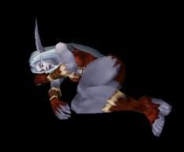
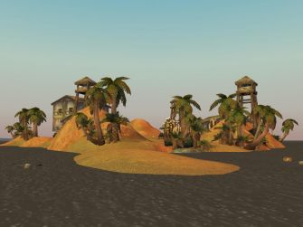

Les Terres de Kirin Tor
Angèlle
Points : 11
 Joué par :
[ Information masquée ]
Joué par :
[ Information masquée ]
Age : 17
Lieu de naisance : Cité de Stormwind
Signe de naissance : Panda
Sexe : Femme
Race : Elfe
Faction : Alliance
Formation : Druide
Niveau : 32
Guilde : Griffe d'or
Artisanat 1 : Dépeceur
Artisanat 2 : Couturier
Envoyer un MP
Description : Recemment revenue d'une longue période d'éxil sur l'Ile de la dispute, elle est revenue avec un objectif.
Maintenant agent double pour le comte de *******, à qui elle envoit des lettres pour tenir informer de l'avencement de sa mission.
 Elle a élue domicile à Ironforge dans une maison de la Grande Forge, près du Hall Magique.
Elle a élue domicile à Ironforge dans une maison de la Grande Forge, près du Hall Magique.
Spécialisée dans la magie de soins, elle ne peut s'empéchée de soigner et de renforcer les gens, déformation professionelle de son ancien poste dans les Hospitaliers.
Cinquième Ère [1]
Lune de la Force
Décade du Panda
Décade du Gorille
Décade de l'Ours
Lune d'Agilité [1]
Décade du Tigre
Décade du Singe
Décade du Faucon [1]
L'Attaque de la Caserne
Il était vers les 20h45. Angèlle avait fini quelques quêtes et avait prit un dîné à l'Auberge du cochon siffleur dans le quartier de la Vieille Ville de Stormwind.
Il y eut un cri. C'était un appelle au secours d'un Paladin à la Caserne de Stormwind, à 30 mètre de là. Angèlle se précipita. C'était deux démonistes. Ils utilisaient leurs pouvoirs pour invoquer des boules de feu sur la caserne.
Le plus jeune retenait le Paladin. La plus expérimentée s'interrompue à l'arriver d'Angèlle et lui envoya un sort qui la mise à terre.
Le Démoniste lui fit boire une Potion pour la réveillée et qu'elle soit à ses ordres. Elle alla ensuite garder l'entrée à la demande de son maître.
Un autre paladin était arrivé entre temps. Il y eut un énorme combat. Deux défenseurs de la Lumière contre deux adeptes de l'Ombre.
Les Paladins combattirent bravement mais perdirent. Les Démonistes souhaitaient les envoyer dans le canal et les couler. Mais l'un d'eux se réveilla. Il s'enfuit, jeta Angèlle à terre et utilisa sa pierre de foyer pour s'enfuir avant que les Démonistes n'accourent.
Ils prirent alors le dernier Paladin et le jetèrent à l'eau. Les Démonistes utilisèrent leurs sorts pour respirer sous l'eau et bloquer le Paladin... pour être sur qu'il soit mort, la réputation des Paladins leur colle à la peau...
Angèlle se réveilla le lendemain matin devant le magasin de l'Herboriste du Canal. Elle ne se souvenait plus de rien et avait un énorme mal de tête. Elle retourna ensuite à Goldshire.
[Ces fait son réels. Toute ressemblance avec des endroits ou des faits est tout bonnement normale. ^_~ ]

Lune de l'Esprit
Décade de la Chouette
Décade de la Baleine
Décade du Lapin
Sixième Ère
Lune de la Force
Décade du Panda
Décade du Gorille
Décade de l'Ours
Lune d'Agilité
Décade du Tigre
Décade du Singe
Décade du Faucon
Lune de l'Esprit
Décade de la Chouette
Décade de la Baleine
Décade du Lapin
Septième Ère [2]
Lune de la Force
Décade du Panda
Décade du Gorille
Décade de l'Ours
Lune d'Agilité [2]
Décade du Tigre
Décade du Singe
Décade du Faucon [2]
Journal d'un Agent double
Journal d'un Agent double1er jour de la Décade du Faucon (Lune d'Agilitté
Chers *********
Après des semaines d'éxil sur l'Ile de la Dispute, à l'Est de Ratchet, je suis retournée sur la côte, c'est là que j'ai recontré notre amis commun ...
**Le reste manque**
...sur le gryphon. Une fois de retour à Stormwind, je commença ma mission. Par chande je vis ce qu'il me fallait: le Compte Mirin Dalanor recherchait des serviteurs. Arpès une demi-heure de discution dans la quelle j'ai du faire preuve de nombreux talents affin d'être acceptée par le nain, il me fit signer un papier. La première partie de mon plan était passée.
Le soir, il y avait une réunion entre Mirin, Orbald et ... voila qui va vous surprendre: la baronne Amelie Bayle ! Oui ! Elle !
Ils ont parler un moment ce qui m'a permit de pouvoir me raprocher de la cible. On aborda enfin le sujet souhaité! Je l'ai vu!
Je vous recontacterai quand j'en serai plus.
Angèlle Fraegmare
3ème jour de la Décade du Faucon ( Lune d'Agilité ) - Septième Ère
Chers *******
La phase 3 de ma mission avance à grands pas. J'instore la confiance.
J'ai fait un plan détaillé détaillé des capitales afin que vous et moi puissions muner à bien le plan B, voir C, s'il y a besoin. Je vous joins une copie de ce plan. Je n'ai pas encore fini, il me reste Darnassus, que je vous ferai parvenir.
Sur ce plan, il y a les magasins avec ce qu'ils vendent, les lieux importants et les différents maisons et pièces où notre cible pourrait ce cacher.
Parallèlement à notre mission principale, j'eu la surprise d'écouter une conversation de la Baronne Amelie Bayle. En effet, alors que je complétai ma carte dans le quartier de la cathédrale à Stormwind, j'entndi des voix venant de loin. En les suivant je céouvrir qu'elles venaint d'une maison donnant sur les communs. c'était la Baronne et des "amis".
Intriguée je me suis camouflée derrière une caisse. Voici leur discution:
"-Amelie? Quel a été le rapport de l'Assemblée Participativ?
-Il y avait pas assez d'independant ... alors j'ai un peu remanié ça. J''ai fait ceci: ca donne une Association, entre divers mouvements, et des independants. Ma maison, celle du Comte Mirin, La Nature Redemptrice et l'Ordre de Harbar. J'ai afis...En pleine potentiaire pour les deux derniers cité.
-Très bon départ.
-La semaine prochaine, deux representant des independants seront elu pour former un conseil, pour regler les questions pratiques. Nous avons commencer tard, alors nous avons aborder peu de point, voici un resumé:
-Je vous écoute.
-Nous avons accepter le systeme de vote proposé. Nous acons accepter l'idée d'envoyer une lettre de felicitation à la garnison de l'armée de Stormwind qui sejourne dans les murs. Nous avons accepter l'idée d'envoyer une lettre de reclamation au service postal de Stormwind, pour qu'ils installent une boîte au lettre dans le quartier de la cathedrale et le quartier des nains.
-Excemmente idée !
-Nous avons accepter l'idée d'envoyer une lettre à la sa Royale mahestée le Roi Wyrnn, pour qu'il change la hierarchie de la garde de Stormwind. Et d'envoyer une lettre à la Capitaine, pour lui suggerer d'aller remettre sa demission au Roi. Et de proposer un appel à candidat pour pouvoir suggerer le nom de la personne qui lui succederait.
-Peut être que les prisons seront bien fermées ainsi !
-Ensuite, nous avons accepter le programme de la prochaine séance, vendredi à 8h30.
-Je doute qu'elle accepte de démissioner, une mutation sur un poste gratifiant mais loin d'ici, serait judicieux pour la convaincre.
-Bah! Je pense qu'elle preferait un poste de caporal, par ici. Et elle y serait très utile!
-Alors qu'elle est capitaine?
-Il faudrait en changer, c'est la question même.
-De poste, pas de garde. Changer son grade, elle refusera surement de démissioner.
-Oui...de rennoncer à la Capitainerie. C'est un peu la même chose, mais merci de corriger mon erreur semantique! C'est vrai que ça serait mal passé!
-Changer de poste, oui. pas de grade. Elle quitte la garde pour l'armée au lointain par exemple. Tout en gardant son grade de capitaine. Enfin, je joue aux billes alors je dis ça en passant!"
Ainsi se poursuivit un longue discution sur "faut-il ou ne faut-il pas changer de poste la Capitaine.
Je continue mon abjectif du mieux possible, bien que j'ai du mal à cerner la cible.
Amicalement
Angèlle Fraegmare

Lune de l'Esprit
Décade de la Chouette
Décade de la Baleine
Décade du Lapin